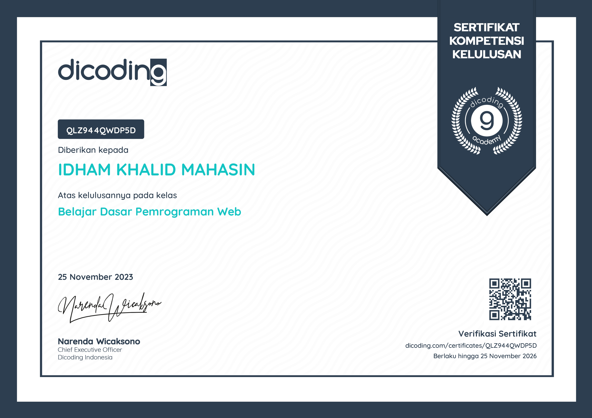

About Me

As a graduate from Bina Nusantara University, I possess a solid educational background in computer science,
complemented by hands-on experience gained during internships as a QA Tester and Technical Writer. My tenure
in these roles has honed my skills in software testing methodologies and technical documentation, ensuring
product quality and clarity in communication. Additionally, I recently completed an intensive programming
bootcamp with Dicoding Indonesia, specializing in HTML, CSS, and Javascript, which provided me with a
comprehensive understanding of front-end web development principles. With a fervent passion for technology and
a proactive mindset, I am eager to contribute to dynamic and innovative tech environments, leveraging my
diverse skill set to drive meaningful impact and collaborate effectively with like-minded professionals..
Experience

During my one-year internship at the Ministry of Law and Human Rights of the Republic of Indonesia, I served
dual
roles as a Technical Writer and a QA Tester. As a Technical Writer, I meticulously crafted comprehensive
technical
documentation concerning legal policies and human rights protocols, ensuring clarity and accessibility for
stakeholders. Transitioning into the role of a QA Tester, I conducted rigorous testing procedures to evaluate
the
functionality and performance of software applications and systems utilized within the ministry, while also
meticulously documenting any encountered issues. This experience not only enhanced my understanding of legal
frameworks but also refined my technical, analytical, and communication skills, preparing me for future
challenges in professional environments.
Technical Writer
Feb 2021 - Aug 2021

As the lead developer, I was responsible for designing a comprehensive software system, which involved
creating
UML diagrams to illustrate the functionality and interactions of both users and the application itself. This
process included crafting detailed narrative texts outlining the application's purpose, features, and user
interactions. Additionally, I utilized various UML diagrams such as activity diagrams, use cases, domain
model
class diagrams, and first cut sequence diagrams to provide a holistic overview of the system's architecture
and
behavior. These diagrams served as crucial documentation, aiding in the understanding of the software's
functionalities and facilitating communication among team members and stakeholders.
QA Tester
Sep 2021 - Jan 2022

Testing software for applications to be launched by the Ministry of Law and Human Rights involves careful
planning, preparing suitable testing environments, executing comprehensive testing scenarios, reporting test
results to developers for fixes, and maintaining thorough documentation. With these steps, testing
objectives
can
be achieved effectively, ensuring that the applications function optimally, meet user needs, and comply with
relevant regulations and standards.
Education

BINUS University
Bachelor's degree, information system
Sep 2018 - Jul 2023
During my time at Binus University, I undertook a project that involved creating a dashboard from data,
crafting
application narratives, developing UML diagrams, and designing UI/UX elements. This experience has honed my
skills
in utilizing tools such as visual paradigm and Microsoft Visio to construct detailed UML diagrams, including
activity diagrams and use cases. Moreover, I have gained proficiency in designing applications by focusing on
user
experience (UX) and user interface (UI), employing techniques like storyboarding, wireframing, and UI design.
Additionally, I have developed expertise in leveraging Tableau to build interactive and insightful dashboards.
These capabilities enable me to effectively translate complex technical concepts into comprehensive
documentation
that resonates with end-users.
Licenses & certifications
Belajar Dasar Pemrograman Web
Dicoding Indonesia
Nov 2023 - Nov 2026

This class thoroughly covers the fundamentals of HTML and CSS as the three foundations of website
development.
These foundations are essential for those who aim to advance their website development skills further.
Compiled
and verified by Dicoding's expert team, the presented materials are structured and comprehensive, providing
a
solid framework for learning and mastering website development. Additionally, this class offers practical
projects
that allow students to apply their knowledge in real-world scenarios, further enhancing their understanding
and
proficiency in website development.
The skills mastered from these activities are
- Proficiency in HTML
- Mastery of CSS.
- Responsive Layout with Flexbox
The projects produced.

Belajar Dasar Pemrograman JavaScript
Dicoding Indonesia
Nov 2023 - Nov 2026

This class is tailored for individuals like me who aspire to become Web Developers/Back-end developers
utilizing
Node.js technology, adhering to industry-validated competency standards endorsed by AWS. By the conclusion
of
the
class, students will have mastered the fundamentals of JavaScript for web application development using
Node.js.
I
can attest that I have personally followed and experienced this class.
The skills mastered from these activities are
- Pengenalan JavaScript
- JavaScript Fundamentals
- Data Structure
- Function
- Functional Programming
- Setup Environment
- Error Handling
- Concurrency
- Node Package Manager
- JavaScript Testing